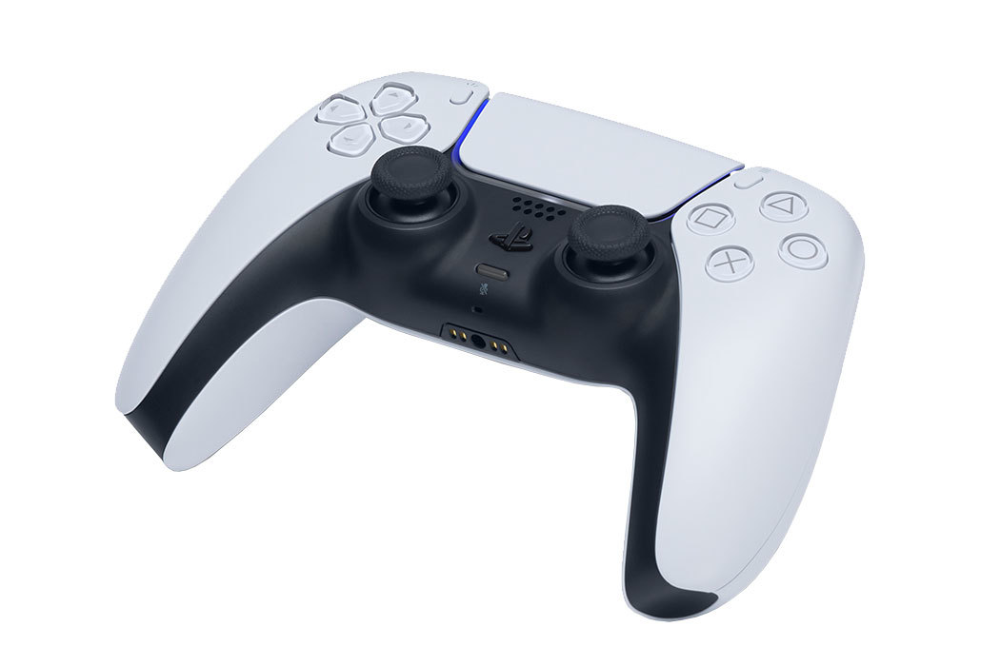

Accesorios de PlayStation®5.

Control inalámbrico
El control inalámbrico DualSense para PS5 ofrece respuesta háptica inmersiva2, gatillos adaptativos dinámicos y un micrófono integrado, todo en un diseño icónico.

Auriculares inalámbricos
Los auriculares inalámbricos PULSE 3D tienen un diseño elegante con micrófonos dobles con reducción de ruido, carga a través de USB Type-C® y una variedad de controles de fácil acceso.

Cámara HD
Cuenta con lentes duales para capturar a 1080p y un soporte integrado, la cámara HD funciona a la perfección con las herramientas de eliminación de fondos de la consola PS5

Control Multimedia
Navega cómodamente a través de las opciones de entretenimiento1 que ofrece la consola PlayStation®5 mediante controles de TV y contenido multimedia intuitivo.